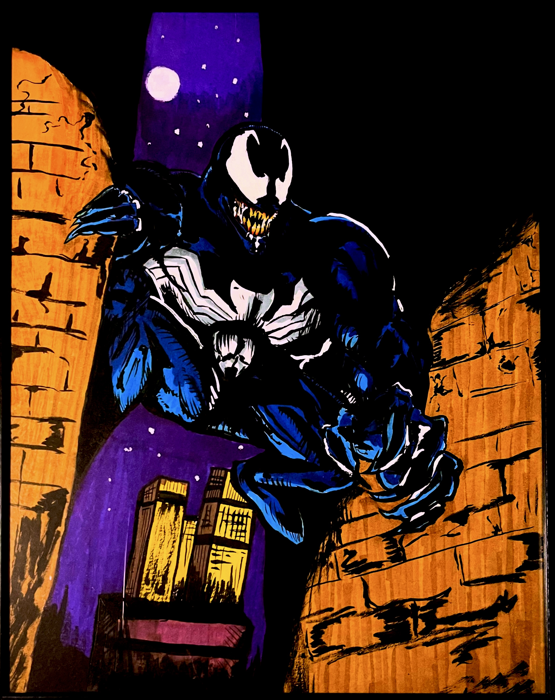

How This Came To Be:
About The First Upload:

Most Couch Critics may be familiar with this image; if not, this is the thumbnail for the first video I had uploaded from this channel!
My Other Hobbies:

For as long as I can remember, I have always been fascinating with drawing,and creating art. My strongest art form is traditional media, such as pen and ink work!